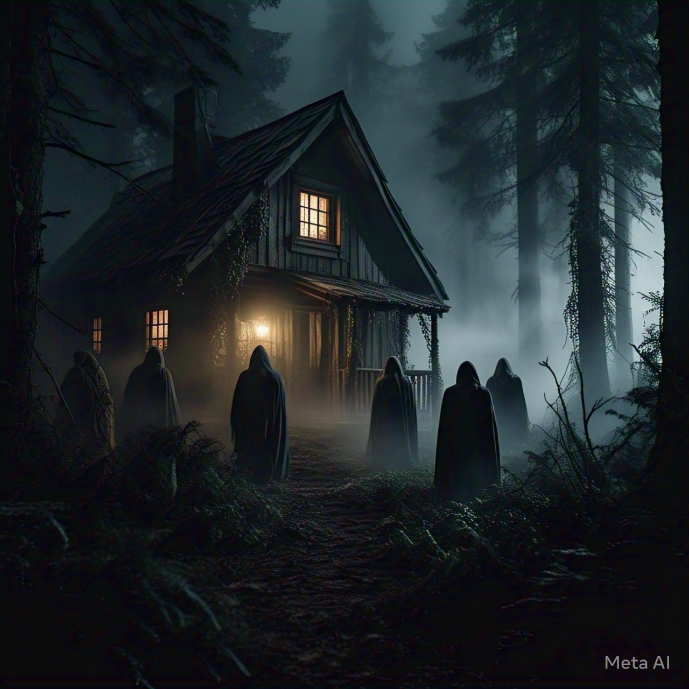

Shattered Kingdom
Step into a world torn apart by medieval strife, where two factions clash in a battle for supremacy. "Shattered Kingdom" captures the raw emotion and intensity of a land divided, with soaring melodies and thunderous rhythms that echo the chaos of war.
View Score (PDF)
Join Us...
Deep within the shadowy forest, a prophecy awakens a sinister cult. "Join Us..." is a haunting composition that weaves eerie harmonies and chilling undertones, drawing you into the malevolent rituals of an ancient evil.
View Score (PDF)
Intermission - The Lobby!
Welcome to SLP Theaters, where the concession stand is alive with the buzz of intermission. "Intermission - The Lobby!" is a playful and upbeat tune that captures the excitement of grabbing popcorn and soda before the next act begins.
View Score (PDF)
The Secret Life of Tigers
Embark on an epic journey with a National Geographic film crew as they uncover the mysteries of the tiger's world. "The Secret Life of Tigers" is a majestic and adventurous score that brings the beauty and danger of the wild to life.
View Score (PDF)
Project Singularity
The technological singularity has arrived, but humanity pays the ultimate price. "Project Singularity" is an arrangement of "The Terminator - Main Theme" that explores the dystopian aftermath of artificial intelligence surpassing its creators.
View Score (PDF)